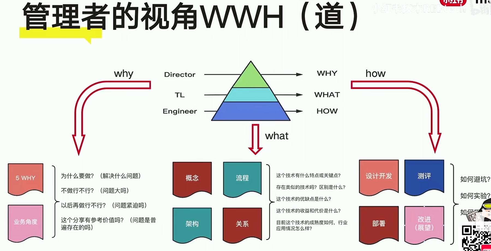

工程师的自我迭代-RedTech
前言：
这篇文章是看了小红书有关“工程师自我迭代”的技术分享的一个总结复盘，It’s quite mind-opening。所以拖了好几天还是想小小总结反思一下，方便以后回看。
0.两种成功：合作成功和赋能成功
- 说明：
- 在职场上的工程师大概可以分为两阶段，一个是技术类工程师，一个是管理层工程师。这两个分别对应着两种不同的成功，即合作成功与赋能成功。
1.合作成功：小T字型人才
- T的意思是分别对应”一“的深和”|“的广，深广须兼顾
1.1深度（自己的技术栈）：
说明：即对于自己的方向要足够深入，方方面面都了解
- 系统性——>我该如何搭建我的知识系统呢？
- 深刻理解——>有项目经历，有成果
系统性的搭建一方面可以基于学校的专业课程，一方面也要自己去探索
1.2广度（相关的技术和业务）：
说明：不能只专于自己的方向，对于相关的领域也要有所了解。比如演讲人是音视频方向的专家，那么他对于云原生，数据库，电商行业，直播互动也要有所涉足。
- 关键概念
- 语言体系
- 交互界面
以上三点总结来说就是知彼解己，即知道相关领域的人所说的关键概念，也能让对方知道自己在表达什么，形成一个良好的交互界面。
2.赋能成功：大T字型人才
- 赋能成功，更多是指为他人赋能，为团队赋能
1.1深度：
- 技术的一个泛化，相当于小T字型人才的一个总和。此时会需要接触其他团队，比如说产品、运营，对于他们来说，技术是一个黑盒子的概念。
1.2广度：
术：表达、写作、逻辑 ===>说和写总归要擅长一个
道：理性、逻辑、修养、企图心、自我控制力
- 怎么修？
- 主动积极（问题驱动，关注结果），达到以终为始
- 怎么修？
信念：自我改变即迭代——>不断更新
心态年轻：拥抱新事物
心智成熟：不做巨婴
巨婴：
- 自我——>知彼解己，双赢思维，统合综效
- 只看眼前——>要事第一，以终为始
- 依赖性强——>主动积极
- 不再成长——>不断更新
3.管理者的“三会一懂”
- 会定目标：
- 五要素：具体、可衡量、可接受、结果导向、时限
- 会开会
- 例会、主题会，就不展开了
- 会复盘
- 小事及时复盘
- 大事阶段复盘
- 完事全面复盘
- 懂战略
- 战略即取舍
- 战略不是关于未来做什么，而是“现在做什么的未来性” （整个分享我最爱的一句话！）
总结：
- 虽然说是管理者的三会一懂，但我觉得很多道理是相通的，比如说制定目标的标准，还有我之前的复盘也多少受此影响，以及最后的战略，常思常新。
4.WWH视角
- WHY:
- 为什么要做？
- 不做行不行？
- 以后再做行不行？
- WHAT:
- 技术特点或关键点？
- 类似的技术，区别？
- 优缺点？成熟度？
- 收益与代价？
- HOW:
- 如何避坑？
- 如何实验？
- 如何迭代？
- 如何工程化？
- 总结：一个工程师的成长就是从只关注HOW上提升到逐渐涉及WHAT和WHY上的深入。当然，我觉得思考很多事情都可以尝试去套用这个，逻辑会很清晰。
5.总结与思考
- 这里面提到了不少《高效能人士的七个习惯》的概念，给我一种世界尽头是这本书的感觉，之前没看进去。但结合实际来讲，其中的许多概念确实很先进，值得学习。
- 我的收获
- 对于工程师的职业发展有了一个更大的视角，之前可能就是集中于技术的提升，现在发现很多软实力也非常值得关注，或者说是一种通用能力
- 如何制定规划，设定目标，底层来说要要事第一、以终为始，上层来说可以以五要素为基准拓展，打算拿这套来规划一下寒假，（但还没开始呢）
- 注重复盘的作用，及时复盘是个不错的习惯，一是理清思路，二是发挥事物的最大价值
- 战略不是关于未来做什么，而是“现在做什么的未来性”，一句顶一万句的感觉
- 关于技术的系统性搭建，目前没什么思路，需要更多的学习吧，到一定程度俯览整个知识结构
工程师的自我迭代-RedTech
http://example.com/2024/01/23/生活与技术/RedTech/